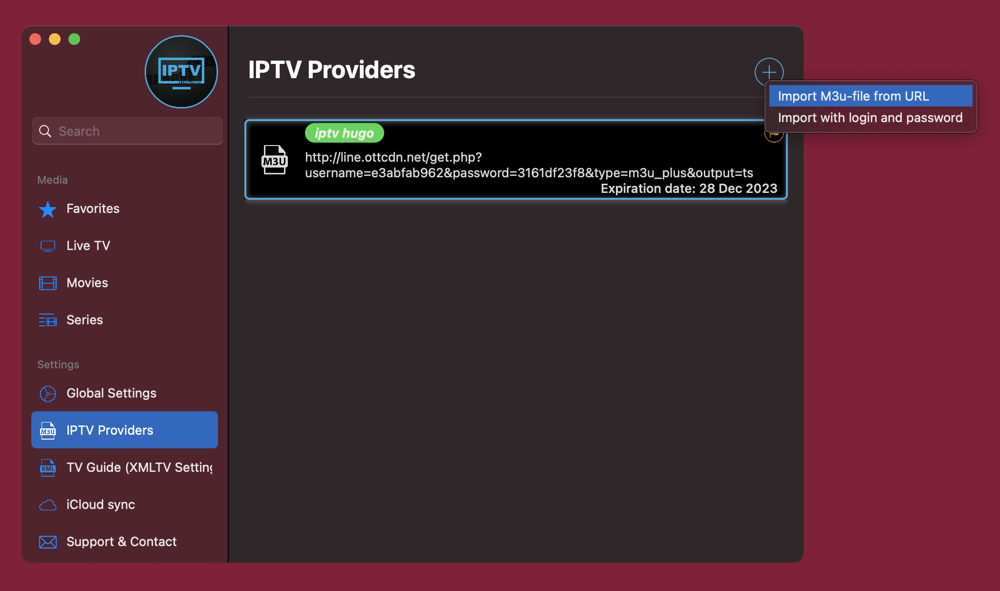
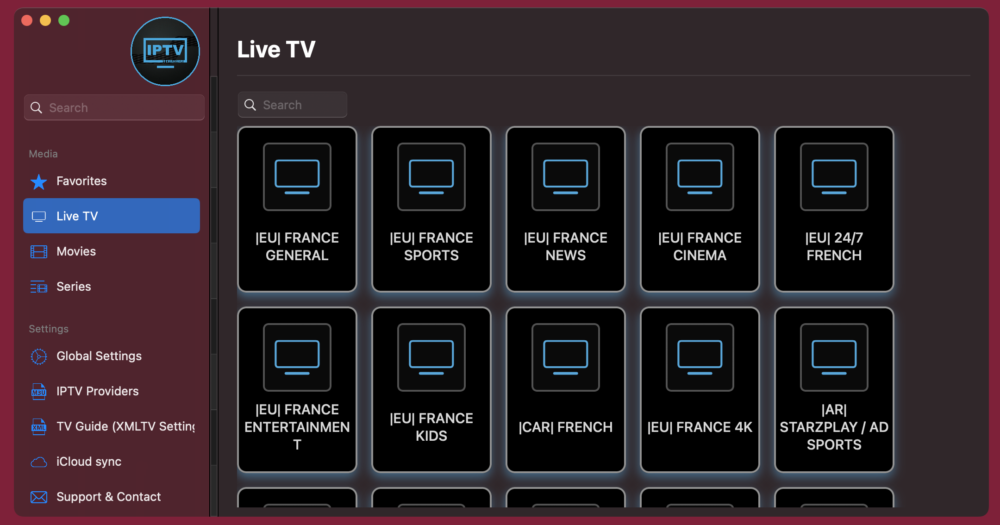

D'après Wikipédia : la télévision IP, ou télévision sur IP1, télévision par ADSL ou IPTV (de l'anglais « Internet Protocol Television ») est une forme de télévision diffusée sur un réseau utilisant l'Internet Protocol.
Il peut s'agir d'une offre proposée par un fournisseur d'accès à Internet, ou d'un service de vidéo à la demande, ou d'une application Android possiblement incluse dans un téléviseur connecté. Il existe également des services illégaux par le biais d'applications Android ou alors d'un décodeur TV.
En gros c'est un mec qui diffuse les chaînes sur son ordinateur et on va avoir accès à son écran comme si c'était le notre. L'avantage c'est qu'on va pouvoir avoir accès à TOUTES LES CHAÎNES car la personne a tous les abonnements 😉.
Personnellement, j'ai souscrit à des abonnements sur ce site et toute la famille en est très contente.
Je préconise l'abonnement annuel SILVER. De plus, tu auras 20% sur ton premier achat donc ça te revient à 40€ l'année.
Tu recevras dans la journée tes identifiants par mail (pas de panique si tu ne les reçois pas dans l'immédiat).
Il faut savoir qu'on peut regarder IPTV sur n'importe quelle plateforme (par contre impossible de regarder sur plusieurs écrans simultanément (d'après ce que j'ai pu tester)). Mais rien ne t'empêches d'installer le système sur ton portable, ton ordinateur etc...
L'application permet de se connecter au serveur et d'accéder aux chaînes.
Il suffira de télécharger une application IPTV comme :
Astuce : Si tu as un boîtier TV (ex : Apple TV, Chromecast, Amazon Fire TV Stick...), tu peux télécharger une application et regarder le tout sur ta télévision.
C'est là qu'on va utiliser les informations qu'on a reçues par mail.
Ça dépendra de l'application mais la configuration reste un peu la même chose.
Dans les paramètres on va chercher l'onglet fournisseur pour l'ajouter :

Ensuite si le fournisseur a bien été enregistré, tu trouveras dans la section live tous les dossiers :

Pour être honnête, il y a assez de chaînes pour suivre une grande partie des tournois mondiaux, tous sports confondus.
Voici quelques chaînes pour te donner un avant goût :
Je suis obligé de préciser deux choses :
Ce principe n'est pas très éthique. Voici un article si l'aspect "bon citoyen" compte pour toi : "https://www.caminteresse.fr/societe/est-ce-que-liptv-est-legale-11185705/" (j'ai eu la flemme de le lire)
Aussi, rien ne nous garantie que le service ne cessera pas de fonctionner dans 2 semaines. On n'a aucune garantie donc c'est un choix à prendre. Après pour être honnête, quand tu vois le prix des abonnements aujourd'hui je pense que le jeu en vaut la chandelle.
N'hésite surtout pas à me contacter si tu as la moindre question.
Voici mon numéro :
À bientôt !